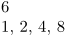

Contents
Summary
The command \ctxlua is used to execute Lua code.
Settings
Description
Use this command to quickly execute some Lua code. TeX expands the argument before Lua receives it.
Advantage: you can pass the contents of macro parameters like #1 to Lua.
Disadvantage: everything after a percent sign is ignored, and once the comments are processed out the linebreaks are stripped, too.
Examples
Example 1
-
\ctxlua{context(1+5)} % 6 %\ctxlua{context("5%")} % Is seen as `\ctxlua{context("5` % 1, 2, 4, 8 \ctxlua{ context(1) % this comment is okay i=2; while i < 10 do context(', ' .. i); i = i*2 end}
- 